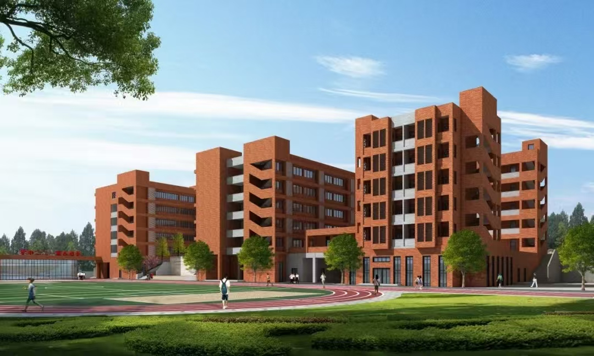

重庆市第一二二中学位于重庆重庆辖区北碚区，以“博学、纯朴、创造、树人”为校训，是一所公办的中学
根据我校的办学传统、办学特点、以及我校"广纳人文灵秀，彰显创造激情，开启智慧人生"的办学理念，提炼出学校的校训是"博学、纯朴、创造、树人"。现作如下诠释：
是对同学们学业上的要求：要求同学们在校就读期间，不但要学好书本知识，更重要的还应养成爱书、读书的良好习惯，把读书学习作为自己终身的追求。广泛学习各种知识、充实头脑，开阔眼界，提高对人、对社会的感悟能力。使同学们在结束122中的学习，离开学校若干年以后，即使忘掉所学的知识，却还能记住学校及老师们对你们终身学习、人格形成的影响。
是对同学们品德的要求：122中学生有吃苦耐劳、学习刻苦，在人格上纯正、质朴的良好传统。我们要保持好、发扬好这种传统。在思想上自信乐观、纯正向上；在行为上做到诚信负责、自强不息；做一个纯粹的人、高尚的人、脱离了低级趣味的人，一个有益于社会的人。使我们的学生面对当今变化着的世界，力戒浮躁，保持一生清纯。
是对同学们努力提高创新和实践能力的要求：我们的办学理念里就有"彰显创造激情、开启智慧人生"的培养人才的目标。著名教育家陶行知说过："处处是创造之地，天天是创造之时，人人是创造之人"。我们应共同努力，把我们的校园建成创造的乐土，开启智慧人生的起点站。
我们122中学要树什么样的人？我们要树把为学业而甘于奋斗、拼搏、吃苦作为一种无与伦比的高尚享受的人；我们要树干事有强烈的责任意识的人；我们要树心胸开阔、纯正朴实、诚实守信的人；我们要树志向高远、善于思考、善于创造、善于合作的人；要使我们的学生努力做一个于国、于民、于家有益的人

有任何问题或合作意向，欢迎随时联系我